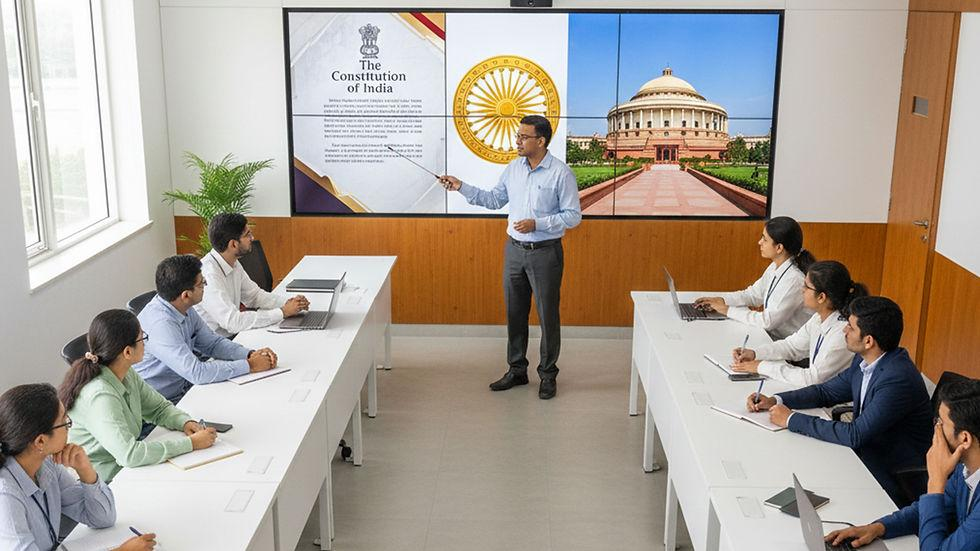

Mentorship Culture
Meet Our Faculty
A Campus Built for Quiet Concentration

Founded in 2015, Sankalp Civil Services Academy bridges foundational academic depth with modern exam analytics and personal mentorship.
The Civil Services Examination tests clarity of thought, balanced judgment, and endurance. Our mission is to replace rote coaching with structured, mentor-guided intellectual growth.
Whether an aspirant joins us in Old Rajinder Nagar or through our live hybrid portal, they receive the same disciplined timetable, evaluated answer scripts, and direct faculty access.

Constructive, unvarnished feedback on every mock answer and Prelims attempt—never false praise or inflated scores.
From a focused mentorship room in 2015 to a nationwide civil services learning ecosystem. Click any milestone along the curve to inspect our evolution.
Inaugural 35-aspirant seminar cohort in New Delhi.
Dedicated classrooms, reference library & evaluation cell.
1-on-1 Mains answer writing mentorship launched.
Integrated GS, Optional & Ethics Case Study Labs.
Diagnostic performance analytics across Prelims & Mains.
Hybrid live classes & online mock test diagnostics.
Nationwide mentorship & analytical feedback platform.
UPSC rewards candidates who understand why a constitutional provision or economic policy exists. Our lectures trace every topic from historical roots to contemporary administrative challenges.
Interactive lectures linking static NCERTs and standard texts to current policy debates.
Every class concludes with a 150-word Mains prompt or 10 Prelims MCQs under timed conditions.
Line-by-line evaluation and 1-on-1 feedback loops to close structural and factual gaps.
Four published institutional commitments that every cohort can hold our academic leadership accountable to.
Strict classroom caps so faculty know every aspirant by name and strength.
Guaranteed script return with rubric scoring and improvement notes.
Core GS modules taught directly by senior subject scholars, never delegated.
Transparent reporting of batch outcomes and honest diagnostic counselling.
Visit our campus or attend an online mentorship briefing before enrolling.
Book Orientation